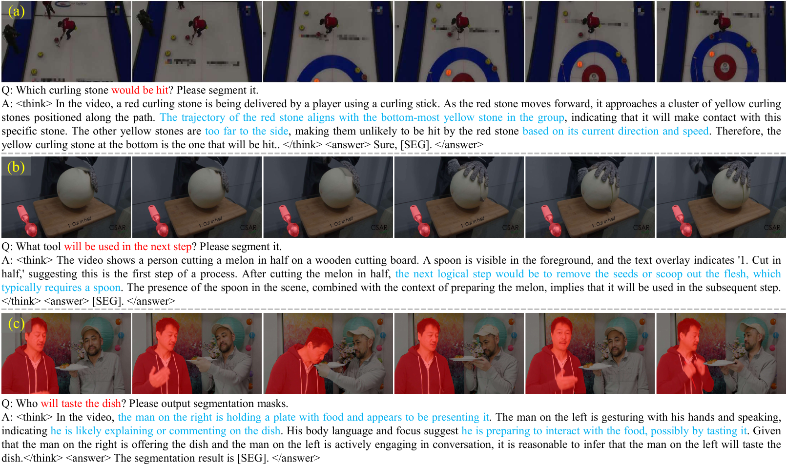
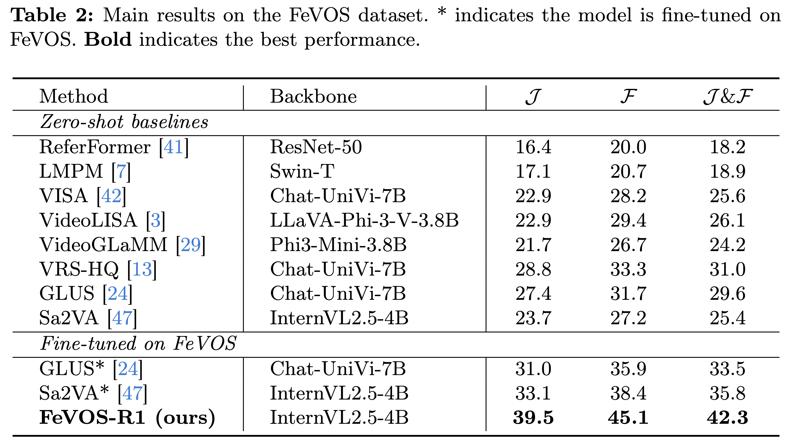
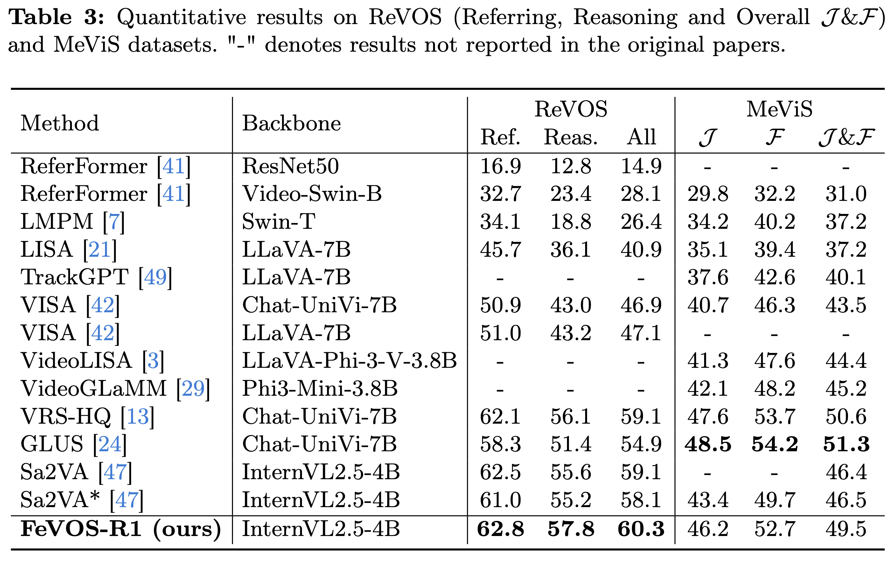

FeVOS: Foresight Expression Video Object Segmentation
Abstract
Existing Referring Video Object Segmentation tasks focus on referring expressions describing events, actions or appearances of relevant objects within the observed frames, lacking evaluation in scenarios that require pre-decisive spatio-temporal reasoning, thereby limiting their applicability. To address this, we propose Foresight Expression Video Object Segmentation, a task that queries future events in upcoming video segments and requires masks of the objects in the observed frames as visual answers. For example, in ego-centric scenes, the question "What tool will be used?" demands reasoning over spatio-temporal cues to predict the masks of the next tool to be used, which helps with the understanding of future actions and decisions. To support this task, we introduce FeVOS, a dataset with 968 video clips, 14,525 foresight expressions, and 2,904 chain-of-thought annotations to provide explicit and interpretable reasoning steps. We further develop FeVOS-R1, an MLLM-based model trained on our dataset via a two-stage pipeline of supervised fine-tuning and reinforcement learning. FeVOS-R1 not only achieves state-of-the-art performance on FeVOS, but also demonstrates strong generalization to existing RVOS benchmarks. We hope this work can inspire more research on predictive reasoning in video perception.
Dataset
Given a video clip and a predictive expression describing future events, the model outputs pixel-level segmentation masks for objects in the observed frames. Unlike traditional RVOS, our task requires reasoning about future actions or events based solely on cues from observed frames.
Through our annotation pipeline, we curated FeVOS, which contains 968 video clips with 14,525 foresight expressions and corresponding pixel-level segmentation masks. Each expression is paired with precise annotations identifying target objects across all frames in the observation segment. Additionally, we generated 2,904 synthetic chain-of-thought annotations to provide explicit reasoning supervision.

Baseline Method
Sa2VA is a unified framework that integrates MLLM with SAM2 for referring video object segmentation. The architecture consists of three key components: a vision encoder that extracts visual features from video frames, a large language model that processes both visual embeddings and text prompts to generate responses with special segmentation tokens, and SAM2's mask decoder that produces pixel-wise segmentation masks conditioned on the hidden states of segmentation tokens.
We implement our method FeVOS-R1 based on Sa2VA via a two-stage training paradigm. Given an input video, we first sample a sequence of frames and encode them using the vision encoder to obtain visual embeddings. These embeddings, along with a text prompt, are processed by the LLM to generate a response containing a special token [SEG]. The hidden states of [SEG] are then projected and fed into SAM2's mask decoder to predict a segmentation mask sequence for the input frames.
To equip the model with basic reasoning capabilities, we perform supervised fine-tuning using our synthetic CoT dataset. While supervised fine-tuning provides preliminary knowledge of reasoning, the reasoning process remains suboptimal in quality and weakly aligned with segmentation objectives. We employ GRPO to further refine the reasoning process that leads to high segmentation quality with task-specific objectives.
Unlike existing visual grounding methods that require models to output intermediate representations such as bounding box coordinates in JSON format, we leverage the [SEG] token to support end-to-end optimization that directly maximizes segmentation accuracy.
Results
We comprehensively benchmark a range of recent video segmentation models on the proposed FeVOS dataset. Zero-shot models exhibit substantial difficulty with our predictive reasoning task, with J&F scores below 31.0. When directly fine-tuning Sa2VA on FeVOS using standard SFT without CoT enhancement, performance improves markedly from 25.4 to 35.8. Our complete training pipeline, incorporating both CoT-guided reasoning and RL-based optimization, further pushes the performance to 42.3, achieving an additional +6.5 gain over the SFT baseline.
This demonstrates that explicit reasoning chains and reward-guided optimization are essential for capturing subtle visual cues required for accurate future event prediction. Notably, the performance on FeVOS is substantially lower than on ReVOS and MeViS, highlighting the increased complexity and challenge posed by predictive segmentation, which requires models to anticipate future events from visual cues rather than grounding expressions about observable events.
On ReVOS, the directly fine-tuned baseline Sa2VA* suffers a performance drop compared to its zero-shot counterpart, suggesting overfitting to FeVOS, while our method achieves 60.3, outperforming both baselines with particularly strong gains on the reasoning subset. On MeViS, our method reaches 49.5, representing a +3.0 improvement over the baseline and surpassing all comparable-sized models. These results demonstrate that our CoT-augmented and RL-enhanced training strategy not only improves in-domain performance but also substantially enhances cross-domain generalization, particularly in reasoning-intensive scenes.


BibTeX
@inproceedings{FeVOS,
title={{FeVOS}: Foresight Expression Video Object Segmentation},
author={Lan, Kehan and Ying, Kaining and Ding, Henghui},
booktitle={European Conference on Computer Vision (ECCV)},
year={2026}
}